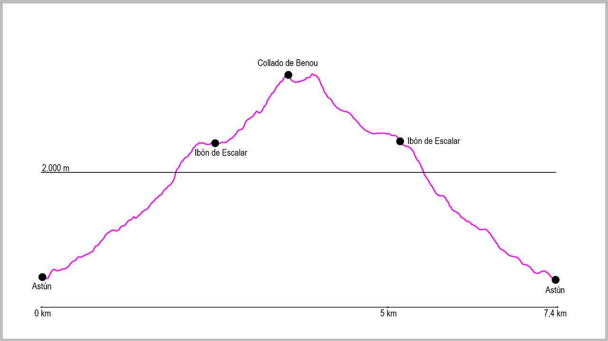

El punto de partida será el parking de la estación de esquí de Astún. Desde el final del aparcamiento cogeremos las escaleras que salen a nuestra izquierda y una vez subidas, nos dirigiremos hacia el norte pasando por la izquierda del telesilla de Truchas. La bordearemos para llegar a un segundo telesilla desde donde sale una pista a nuestra izquierda y un camino justo desde una valla de madera al inicio de la pista. Tomaremos ese camino que rápidamente nos hace ganar altura.
Enseguida iremos subiendo en dirección noroeste por la margen izquierda del río Aragón hasta llegar a una zona que poco a poco se va empinando, en la que algún tramo de roca tendremos que prestar más atención. Nada más pasar este segmento, el camino gira ligeramente a nuestra derecha para dar vista al ibón de Escalar. Llegados a este punto, lo bordearemos por la derecha hasta juntarnos con el camino que viene desde el ibón de Truchas.
Una vez pasado el ibón, seguimos una senda muy marcada, que ascendiendo y haciendo una curva a la derecha, llega al collado de Los Monjes o Puerto de Jaca, donde encontramos un plano y una señal indicativa. A partir de este momento, entramos en parque nacional, donde habrá que cumplir la normativa del mismo (entre otras no se pueden llevar perros).
En este momento, tomaremos una senda que sale a nuestra izquierda y que asciende rápidamente por toda la divisoria. Durante unos 400 metros ganaremos rápidamente altura para llegar al collado de Benou, donde daremos vista a todo el valle del Aspe francés y giraremos a nuestra izquierda, empezando aquí el recorrido por la cresta.
Al principio es un recorrido cómodo y fácil, pero al poco de pasar la Punta de Escalar tenemos un pequeño destrepe de 4-5 metros donde tendremos que echar las manos a la roca. Pasado este punto ya divisaremos el collado de Audas, donde llegaremos ya cómodamente.
En este lugar giraremos a nuestra izquierda y empezaremos el descenso de nuevo hasta el ibón de Escalar. Este tramo no tienes sendero alguno, pero teniendo de referencia el ibón es fácil de seguir la ruta.
Justo al llegar al sobradero del ibón, lo cruzaremos y tomaremos un camino que sale a nuestra derecha para afrontar la bajada hasta el punto de inicio. En el primer tramo tendremos que extremar la precaución, pero enseguida llegaremos a un camino bastante cómodo que baja a la margen izquierda del río Aragón.
